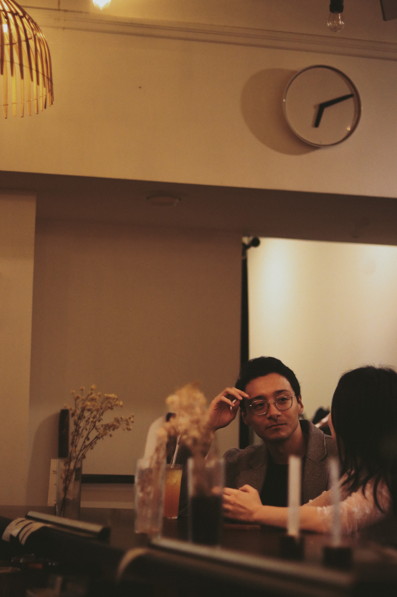
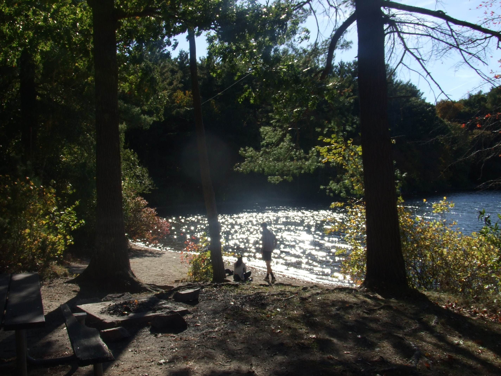

Every relationship has a story behind it. I was a bartender, and over-the-bar-counter love stories were more than frequent.
Sometimes, it is a story of "how I met her," which is hopeful, beautiful, and full of affection.
But there are also stories of "how we part ways."
Inspiration for my work comes from those encounters, or sometimes from a good movie, a song, or my personal experiences.
There are so many love stories worth telling, and my goal is to convey these stories through my photos.
I aim to bring them to life because I believe many others out there share similar experiences and can sympathize.
I experiment with different shot angles, subjects, and lighting to create my vision. Most of the time, my shots are intentional;
I imagine how the vision should look beforehand. The lighting must come from a certain angle, the subject positioned perfectly,
and their expression captured just right. Everything has to align to tell the story I want.

An indoor shot"Sometimes, hours can feel like seconds, but sometimes, a single second lasts a lifetime."

An outdoor shot
"Remember that one autumn when I met you?"
How do I create a story?
Think carefully about the story I want to tell (this usually comes naturally).
Envision the shot: What do I want to see? What’s the main color of the shot?
Pick the right gear: This depends on the color and the aesthetic I'm aiming for.